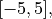

Search Space¶
This page describes the search spaces (also known as domains) that can be used in Tuun. We first decribe how to configure a search space, and then describe the format of the design that is produced at each iteration of tuning, based on the search space.
A search space specifies the set of designs over which we aim to optimize an objective.
Search spaces for Tuun can be defined in multiple ways. The most straightforward way is
via the set_config_from_list function:
from tuun.main import Tuun
tu = Tuun()
search_space = # Set search space here
tu.set_config_from_list(search_space)
Euclidean search spaces¶
For example, if we want to optimize over a one-dimensional Euclidean space within bounds  we would configure our search space with:
search_space = ('real', [-5, 5])
At each iteration of tuning, Tuun produces a design from this search space. This
search space represents one-dimensional Euclidean vectors, and the format of each design
is a list containing a float, for example: [ 3.47 ].
If we want to optimize over a higher-dimensional Euclidean space, for example a two-dimensional Euclidean space, with the same bounds as above for both dimensions, we would use the configuration:
search_space = [('real', [-5, 5]), ('real', [-5, 5])]
In this case, the format of each design is (again) a list containing a float for each
dimension, for example: [ 1.27, 4.91 ].
Discrete search spaces¶
If we want to optimize over a list of categories, such as the strings 'red',
'green', and 'blue', we would use the configuration:
search_space = ('list', ['red', 'green', 'blue'])
For lists, the format of each design is a list containing one element from our set of
categories. In this case, an example design is: [ 'blue' ].
Combining search spaces¶
We can also combine search spaces, for example to optimize over a mixed set of real and categorical variables. For instance, suppose we want to optimize over a two dimensional search space consisting of the Cartesian product of a one-dimensional Euclidean space with a one-dimensional discrete space. We could then use the configuration:
search_space = [('real', [-5, 5]), ('list', ['red', 'green', 'blue'])]
In this case, the format of each design is a list containing a float and an
element from the list of categories, for example: [ 1.27, 'blue' ].
Note that a search space can be defined for an arbitrary ordering of the variables and types, such as:
search_space = [('list', ['a', 'b']), ('real', [-10, -2.5]), ('real', [1.25, 7.77]), ('list', ['c', 'd', 'e', 'f']) ]
An example design from this search space is: [ 'a', -5.47, 1.33, 'd' ].